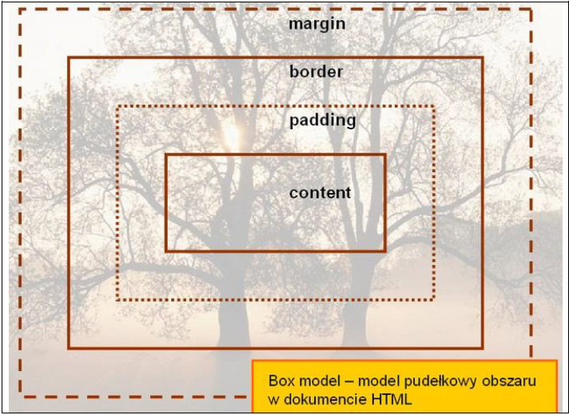
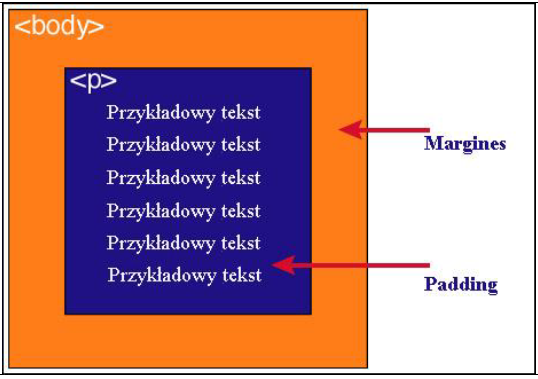

Każdy element w dokumencie HTML, otacza się prostokątnym obszarem zwanym pudełkiem (ang. Box model). Pudełko składa się z kilku warstw:
| Content | Zawartość elementu (np.: tekst, obrazek) |
| Padding | Otaczające marginesy wewnętrzne, odstęp między obramowaniem i zawartością elementu |
| Border | Obramowania wokół zawartości elementu, ma styl i kolor. |
| Margin | Marginesy wokół ramki (margines zewnętrzny). Jest to pusty obszar wokół ramki, który nie ma koloru tła i jest przeźroczysty. |
Uwaga 1. Padding, border i margin mogą mieć zerową wartość.
Uwaga 2. Tło elementu jest określone dla wszystkich z podanych powyżej obszarów z wyjątkiem marginesów zewnętrznych, które zawsze są przezroczyste (transparent).
|
 |
Różnica pomiędzy paddingiem i marginesemPadding określa przestrzeń wokół danego elementu, np: >p> lub >div>, natomiast margines >br> przestrzeń pomiędzy elementami. |
|  |
|
Jak widać na rysunku, padding oznaczony jest kolorem niebieskim. Określa on wielkość przestrzeni wokół elementu. Element ten posiada również margines zaznaczony kolorem pomarańczowym. Jest to odległość od brzegu elementu. |